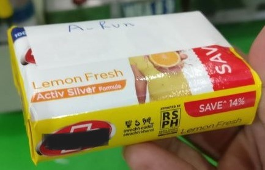
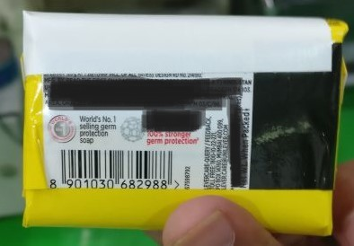
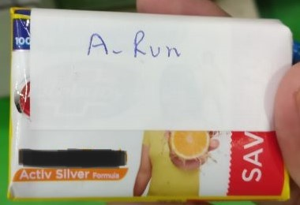

Abstract
In soap manufacturing, a soap in covered/wrapped with 2 layers of packaging material. These packaging material come in fixed volume which can only last for upto 40-50 minutes. This means, the operator need to halt the machine to setup another reel for atleast 7-8 times in a shift. Each changeover causes 2-3 minutes of downtime per changeover which results into 40-50 min of downtime per shift. This project aims to automate the above task.
Working demo
System
PLC: Micrologix1400 Buffer Sensor: Sick GTB6 P4211 (Photo-electric proximity sensor) Bobbin end/running Sensor A/B/C: Autonics BUP-30S Colour Sensor: Sick KT3W-P1116 (Contrast Sensor) Actuator: Festo Pneumatic Cylinder - Festo Solenoid Valve Magnetic switch: Schmersal Bobbin A/B/C/D: DINE18SD10 BCH INDIA (Inductive proximity sensor M18-DC 2wire, flush type,NO) Bobbin End D: IFM OGH500 (Diffuse reflection sensor)
My contribution
I spearheaded a team comprising of an Electrical and Mechanical technician and wrapping machine operator. The challenges were to implement and execute the automation system in a running production line. I worked with servo motor, servo drive(VFD), PLC (programmable logic controller), proximity sensor, color sensor, pneumatic cylinders. 1) Unit testing: checked the operating conditions and the working of each individual component. 2) Cabel traying and labeling: Re-routed the cable trays and labeled each cabel for identification. 3) Ladder logic: Developed ladder logic in Allen Bradley Micrologix1400 PLC for automating wrapper changeover. Ensured that safety checks are in place and working. 4) Servo-Drive: Programmed VFD for the servo motor to setup different speeds for the desired operation. 5) SOP: Documented my findings and prepared Standard Operating Procedure(SOP) which would assist the machine operator to operate newly installed automating system. 6) Trials: Conducted trials in different shifts and for different SKU. Achieved 95% stabilization for stiffner (white/inside Packaging material) and 80% stabilization for wrapper(outside packaging material) overally.
Results
  
Project information
- PLC: Allen Bradley Micrologix1400
- Associated with: Unilever-India
- Efficiency improvement: 4.2%
- Cost: INR 1million
- Benifit/cost ratio: 4.9